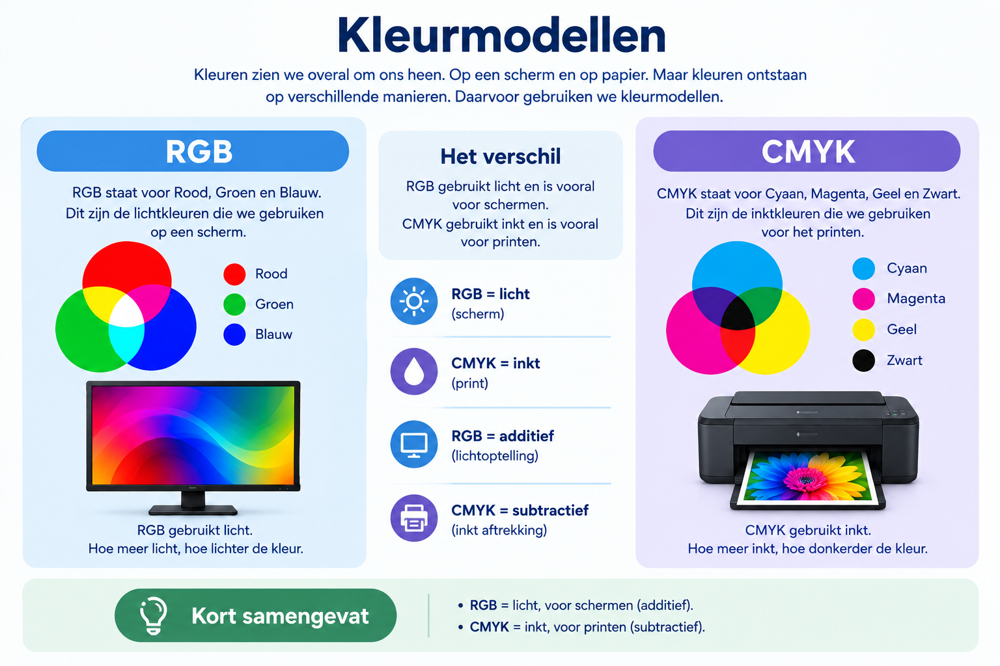

Een kleurmodel is een manier om kleuren met getallen te beschrijven. Computers gebruiken kleurmodellen om kleuren op schermen te tonen en om kleuren te mengen bij het afdrukken.
RGB staat voor rood, groen en blauw. Een scherm maakt veel kleuren door deze drie kleuren met verschillende sterktes te combineren. Als rood, groen en blauw allemaal op hun hoogste waarde staan, krijg je wit. Als alle drie uit staan, krijg je zwart.
CMYK staat voor cyaan, magenta, geel en zwart. Dit kleurmodel wordt vooral gebruikt bij printen. De printer mengt deze inktkleuren om verschillende kleuren op papier te maken.

Ik heb deze video gekozen omdat ik meer wilde leren over RGB en CMYK. De video legt uit wat deze kleurmodellen betekenen en waarvoor ze worden gebruikt.
Bekijk mijn gekozen video over RGB en CMYK
Door deze video te bekijken, begrijp ik beter wat het verschil is tussen RGB en CMYK en weet ik wanneer je RGB en CMYK moet gebruiken.